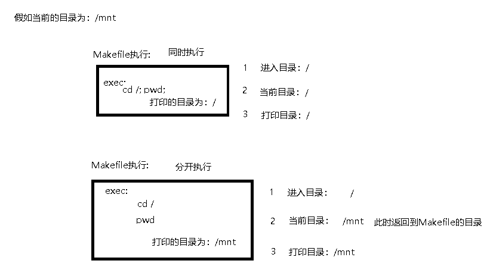
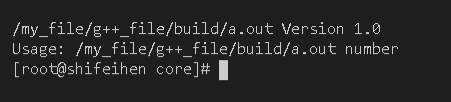
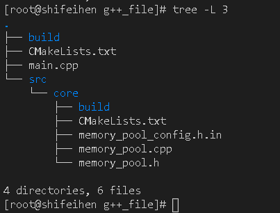
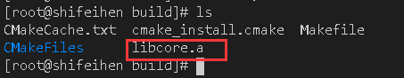
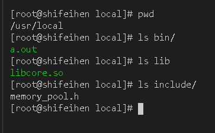

这两都是编译配置工具
Makefile
yum安装:
1 | yum install make -y |
tar包安装:下载
1 | # 解压或进入目录并创建buil目录 |
折叠
makefile的主要部分由
显示规则隐式规则变量文件指示注释组成
makefile的注释用
#
| 字符 | 描述 |
|---|---|
| % | 匹配零或若干字符 |
Makefile规则
1 | 目标文件: 源文件 [可选:依赖文件] |

变量
1 | 变量名 = 值 |
1 | $(变量名) |
删除目标文件
在
rm命令前面加了一个-的意思就是，也许某些文件出现问题，但不要管，程序继续运行clean需要放在文件的最后面.PHONY伪目标，表示这只是一个标签
1 | .PHONY: clean |
引用
可以使用类似于#include的方式把别的Makefile包含进来
1 | # a.mk为Makefile的头文件 |
在不同的目录执行make
all执行多个变量
1 | all: a.o exec |
CMake
yum安装:
1 | yum install cmake |
tar包安装:
下载
1 | # 安装依赖 |
创建一个CMakeLists.txt的文件，在同级的目录在创建一个目录（目录文件名称随意）
文件写入以下数据
1 | // CMakeLists.txt |
进入新创建的目录，执行
1 | cmake .. |
执行成功就会生成一个Makefile，make之后就能获取可执行文件
命令
折叠
使用指定编译器
1 | # gcc |
生成可执行文件
1 | # 链接多个文件 |
设置变量，操作变量
1 | # 创建变量 |
cmake version: 3.17.0
根据官方做的笔记
配置头文件
创建一个name.h.in文件并写入:
修改为自己的项目名称
1 | #define 项目名称_VERSION_MAJOR @项目名称_VERSION_MAJOR@ |
CMakeLists.txt:
1 | cmake_minimum_required(VERSION 3.17.0) # cmake最低使用版本 |
configure_file根据name.h.in生成name.h文件（name.h将会生成在 build目录）
@test_VERSION_MAJOR@: project(test VERSION 1.0)里的1@test_VERSION_MINOR@: project(test VERSION 1.0)里的0${PROJECT_BINARY_DIR}: 当前工程的构建目录（build）
创建main.cpp文件写入:
1 | #include "./build/memory_pool_config.h" |
结果:

创建自定义库文件

在子目录创建CMakeLists.txt文件并写入:
1 | # /my_file/g++_file/src/core/build |
然后在子目录创建并进入Build目录，进行cmake.. 与 make操作
生成的库文件:

add_library: 默认生成为静态库文件
1 | # 指定生成静态库 |
使用自定义库文件
1 | # 构建选项 |
打开name.h.in写入:
1 | #cmakedefine VAL |
- option必须放在configure_file前面，否则宏不会生成
安装
文件末尾处添加:
1 | # /my_file/g++_file/build |
1 | # /my_file/g++_file/src/core/build |
最上级CMakeLists进行cmake.. 后make install

添加动态库路径后即可运行文件
1 | # 添加动态库 |
make install指定安装路径
1 | make DESTDIR=/路径 install |
定义函数进行测试
install之后:
1 | enable_testing() # 启用测试 |
进行make之后使用ctest进行测试
添加预定义宏并赋值
1 | add_compile_definitions(DEFINE_NAME=${DEFINE_NAME}) |
1 | // head.h |
设置最新版本的g++库目录
注意: 新的glibc千万不要使用这两环境变量！
1 | vim /etc/profile |
内置变量
${CMAKE_CURRENT_LIST_DIR}: 最顶层CMakeLists.txt文件的位置
####
1 |